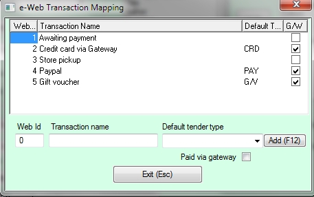
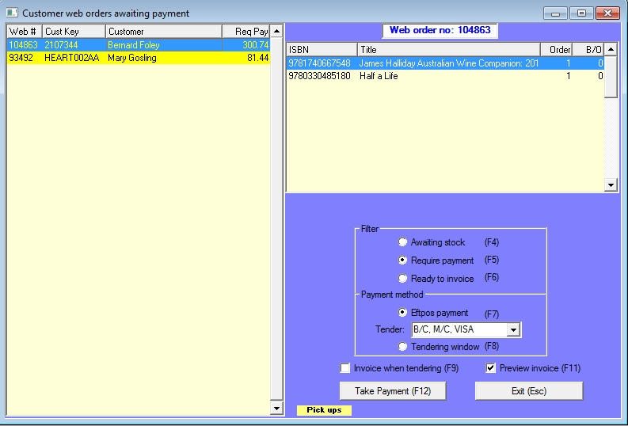

|
Web Orders - e-Web
|
Previous Top Next |


| · | Awating stock - if the order is waiting for stock it will be displayed here.
|
| · | Require payment - if a credit card payment is yet to be processed the order is displayed in this view.
|
| · | Ready to invoice - orders where the stock has been received and the payment processed can be invoiced in this view. Users of the warehouse module would probably want to use the picking and packing window rather than this view.
|